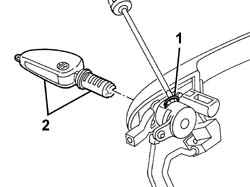

7005C14 FRONT SIDE DOOR LOCK BARREL (IN HANDLE) R R WITH HANDLE REMOVED
- Path
- Procedures > 70 FITTINGS > 7005 PASSENGER COMPARTMENT FRONT SIDE DOORS > 7005C FRONT LOCK CONTROLS > 7005C14 FRONT SIDE DOOR LOCK BARREL (IN HANDLE) R R WITH HANDLE REMOVED
- Kind
- repair procedure (removal / refitting; the operation number is the code)
- Applies to
- all engines; all production periods
- Interactive page
- https://sloeber94.github.io/elrnDB-aGt/en/#/125001769
Applies to: engines: 1.8 T.SPARK; all production periods
Applies to: all engines; all production periods
 Removing
Removing
 Refitting
Refitting1. Release the retaining spring for the key lock barrel.
2. Fit the key in the lock barrel and extract it from the handle.

Applies to: all engines; all production periods
Refitting
RemovingCheck that the barrel is undamaged.
Insert the key in the barrel.
Insert the barrel in its housing.
Engage the retaining clip on the barrel.
After fitting the handle, check that the barrel and the lock control mechanism are working properly.